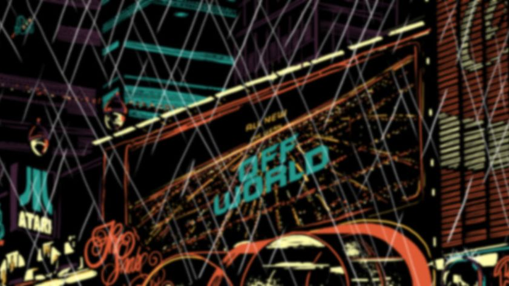

Blade Runner - a Postmodernist View
The Postmodern reply to the Modern consists of recognizing that the past, since it cannot be destroyed, because it's destruction leads to silence, must be revisited : not innocently but with irony '. Umberto Eco, Postmodernist Fiction.
Roy : ' Fiery the angels fell, Deep thunder roll'd around their shores, Burning with the fires of Orc.'
Bladerunner is not a pleasing film. Visually it is stunning and at the same time frightening. Unlike Stanley Kubick's, ' Space Odyssey 2001 ' with it's pristine images, Bladerunner sets out to shock. It paints a picture of a world where the sun never shines, where it rains incessantly. The crowded streets are narrow and filthy. People rush by dressed in weird attire. The images are magnificent yet decadent. There is a feeling of eeriness and the atmosphere is thick with expectancy. Each frame is like an abstract painting. When viewed, it says different things to different people. There are so many things happening at the same time. The bombardment of the visual effects and the double tongued dialogue has the viewer totally perplexed an this is what the film purposely sets out to do.
For once, the viewer is asked to think. Yet there is no clear - cut plot and everything is not what it seems. What is there is yet not there. What is said has a totally different meaning to the words spoken. The film has a subtext and it is within this subtext that it reveals itself. The behavior of the characters does not tie in with the story - line. There are hidden meanings in everything they say and do. It is not even clear who is human.
The film failed to find its audience because it could not be clearly understood. Understanding is what it demanded. Like all Postmodernist works, it did not conform to the norm. Instead of being a passive consumer, the viewer had to take an active part in the consumption of meaning.
Bladerunner is a parody. It revisits the past, mimics it and holds it up to ridicule. There are definitive religious and philosophical parallels and these are Milton's Paradise Lost and humanity itself. It goes as far as to question God, mock Him and finally kill Him.
Roy and his followers : Pris, Zora and Leon are Milton's fallen angels. They were created by Tyrell ( God ) and given a four year lifespan. God created man and gave him a four - score lifespan. The parallels are quite apparent.
Roy is the symbol of mankind. He was created by God and was separated by his maker, when he was sent off world ( expelled from heaven ). And like Lucifer, sets about on a course of destruction. Milton's battle takes place in heaven. Here it is fought on earth.
The selected extract is part of the dialogue that takes place between Tyrell and Roy when they first confront one another. The latter cannot approach Tyrell directly. He has to make use of an intermediary ; Sebastian ( Jesus Christ ) as his link to God. Biblical teachings has it that God can only be approached through His Son, Jesus Christ.
Sebastian is the only true human. He is flesh and blood. He is the composite of both man and replicant as Jesus is a composite of God and man. Just as Jesus Christ lived among men, Sebastian lived among the replicants. In the scriptures, Jesus Christ attempted to bring humanity to God and was killed by those he tried to save. The same thing happened to Sebastian. He brought Roy ( man ) to his creator and was killed for his trouble.
Sebastian was Tyrell's subordinate just as Jesus was God's subordinate. But whereas the Bible says that the score between Lucifer and Christ is yet to be settled, Ridley Scott decides to settle it there and then. He takes advantage of the liberties afforded him by Postmodernism by deciding to rewrite the future. He does not wait for the prophecies as per the Book of Revelations and the final battle. He has Satan kill Christ there and then.
The camera angle used to film the lift ascending to Tyrell's headquarters gives the viewer the impression that it is actually going up to heaven. The interior decor resembles that of a cathedral and there is an aura of holiness about the place.
The dialogue between God and Satan when they finally face one another is frightening. What transpires in the room has a shocking effect on the viewer. Tyrell like God, speaks softly, and does not anger, whereas Roy like Lucifer is tormented and angry.
Tyrell : ' I expected you to come sooner .' Roy : ' It's not an easy thing to meet your maker . Fiery the angel's fell, Deep thunder roll'd around their shores, Burning with the fires of Orc, I want more life Fucker ! ' Tyrell : ' The light that burns twice as bright burns half as long...and you have burned so very, very brightly Roy.'
Satan is not satisfied by the answers given to him by God and begins to make demands. But it falls on deaf ears and like humanity who pray to God for release from their sufferings, he is left unanswered. Biblical myth has it that humanity must not question God or His motives. The sentence of death placed on mankind will not be rescinded by Him. Humanity cannot sit in judgement of God but Roy Batty kisses his creator, judges Him and kills Him. This is perhaps the most shocking moment in the film as the viewer is left horrified, as Batty with tears rolling down his face gorges out His eyes. He obviously loves his creator but in this scene, he takes on the role of humanity and on behalf of humanity, executes God.
We are asked not to judge. We are born with the sentence of death hanging over us. We cannot question or may not question why we have to suffer through this life. Our prayers for help are most often left unanswered. Thus, when Roy kills God, however horrific it may seem, perhaps finally humanity can pass it's own death sentence on God.
With God and Christ dead, Satan becomes almost a Christ - like figure. There is an aura about him. He glows as if he is all seeing and all knowing. But he is under a death sentence as he is pursued by Dekkard, God's executioner. He has no alternative but to confront the Grim Reaper head-on. He fights the battle not only for himself but also for mankind. Whereas mankind at all times tries to avoid death, Roy turns to confront it. A further significance to substantiate his transition into Christ is that he pierces his hand with a nail, a symbol of Christian crucifixion.
The final scenes in the film are also of great significance. The violent struggle on the rooftops is fought in semi - darkness and pouring rain and it is as if it is taking place in the very bowls of Hell. With the end near, Batty, goes through yet another change. This is manifested in the fact that he prevents Dekkard from falling to his death and indeed becomes his savior.
As they face each other, Roy seems to come to terms with his own mortality and the inevitability of death. He ceases to struggle against what he cannot change....the ' hand of death '. He looks back at what he had done and seen.
' I've seen things you people wouldn't believe, Attack ships on fire off the shoulder of Orion, I watched seabeams glitter in the dark near the Tannhauser Gate, All those moments will be lost, like tears in rain, Time to die '.
By the time he dies, he has redeemed himself by following in the footsteps of Christ. In order for God to forgive him, he spares the life of the man who killed his beloved Pris. As he dies, the white dove he had been holding flies free into the sky. Finally his soul is purified and on the way upward.
The ' Angel of Death ' ( Dekkard ) looks upon the dead Batty and muses.
'All he'd wanted were the same answers the rest of us want. Where do I come from? Where am I going? How long have I got? All I could do was sit here and watch him die '.
Written by Jean-Paul Gossman
Copyright Jean-Paul Gossman, 2001.